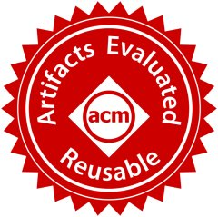

Yingying Zheng
Assistant Professor at Technology Center of Software Engineering, Institute of Software Chinese Academy Sciences (ISCAS)
Contact:
No. 4, South Fourth Street, Zhongguancun, Haidian
District, Beijing, China
Email:
zhengyingying14@otcaix.iscas.ac.cn
I am an Assistant Professor at Institute of Software Chinese Academy Sciences (ISCAS). I received my PhD in University of Chinese Academy of Sciences in 2024, where I specialized in software analysis and testing.
My research interests are Software Testing and Distributed Systems. My current work focuses on reliability assurance of database management systems, especially on graph database systems testing and optimization. I also focus on streaming data processing and big data processing frameworks.
Education
-
Sep 2019 - Jun 2024, Ph.D. in Software Engineering, University of Chinese Academy of Sciences
-
Sep 2014 - Jun 2017, M.Eng. in Software Engineering, University of Chinese Academy of Sciences
-
Sep 2010 - Jun 2014, B.Eng. in Software Engineering, Jilin University
Publications
2025
-
[VLDB 2025] Ziyu Cui, Wensheng Dou, Yu Gao, Rui Yang, Yingying Zheng, Jiansen Song, Yuan Feng, Jun Wei. Simple Testing Can Expose Most Critical Transaction Bugs: Understanding and Detecting Write-Specific Serializability Violations in Database Systems. The 51st International Conference on Very Large Data Bases, VLDB, 2025.
-
[ICDE 2025] Lei Tang, Wensheng Dou, Yingying Zheng, Lijie Xu, Wei Wang, Jun Wei, Tao Huang. Proving Cypher Query Equivalence. The 41st IEEE International Conference on Data Engineering, ICDE, 2025.
-
[VLDB 2025] Jiansen Song, Wensheng Dou, Yingying Zheng, Yu Gao, Ziyu Cui, Wei Wang, Jun Wei. Detecting Schema-Related Logic Bugs in Relational DBMSs via Equivalent Database Construction. The 51st International Conference on Very Large Data Bases, VLDB, 2025.
2024
-
[ICPADS 2024] Zheheng Liang, Yingying Zheng*, Sheng Bi, Chaosheng Yao, Jiayan Wang, Lijie Xu, Shuping Ji, Wei Wang, Shikai Duan. GraphFlow: A Fast and Accurate Distributed Streaming Graph Computation Model. The IEEE 30th International Conference on Parallel and Distributed Systems, ICPADS, 2024.
-
[ISSTA 2024] Yingying Zheng, Wensheng Dou, Lei Tang, Ziyu Cui, Yu Gao, Jiansen Song, Liang Xu, Jiaxin Zhu, Wei Wang, Jun Wei, Hua Zhong, Tao Huang. Testing Gremlin-Based Graph Database Systems via Query Disassembling. The 33rd ACM SIGSOFT International Symposium on Software Testing and Analysis, ISSTA, 2024. [PDF]

-
[VLDB 2024] Jiansen Song, Wensheng Dou, Yu Gao, Ziyu Cui, Yingying Zheng, Dong Wang, Wei Wang, Jun Wei, Tao Huang. Detecting Metadata-Related Logic Bugs in Database Systems via Raw Database Construction. International Conference on Very Large Data Bases, VLDB, 2024. [PDF]
-
[ICST 2024] Yingying Zheng, Wensheng Dou, Lei Tang, Ziyu Cui, Jiansen Song, Ziyue Cheng, Wei Wang, Jun Wei, Hua Zhong, Tao Huang. Differential Optimization Testing of Gremlin-Based Graph Database Systems. The 17th International Conference on Software Testing, Verification and Validation, ICST, 2024. [PDF]
-
[ICSE 2024] Ziyu Cui, Wensheng Dou, Yu Gao, Dong Wang, Jiansen Song, Yingying Zheng, Tao Wang, Rui Yang, Kang Xu, Yixin Hu, Jun Wei, Tao Huang. Understanding Transaction Bugs in Database Systems. The 46th IEEE International Conference on Software Engineering, ICSE, 2024. [PDF]
2023
-
[ICSE 2023] Rui Yang, Yingying Zheng, Lei Tang, Wensheng Dou. Randomized Differential Testing of RDF Stores. The 45th IEEE International Conference on Software Engineering, ICSE Demo, 2023. [PDF]
2022
-
[ISSTA 2022] Yingying Zheng, Wensheng Dou, Yicheng Wang, Zheng Qin, Lei Tang, Yu Gao, Dong Wang, Wei Wang, and Jun Wei. Finding Bugs in Gremlin-Based Graph Database Systems via Randomized Differential Testing. The 31st ACM SIGSOFT International Symposium on Software Testing and Analysis, ISSTA 2022. [PDF] [Slide] [Website]

2020
-
[JCC 2020] Kai Zhang, Yange Fang, Yingying Zheng, Hongbin Zeng, Lijie Xu and Wei Wang. GraphLib: A Parallel Graph Mining Library for Joint Cloud Computing. The International Conference on Joint Cloud Computing, JCC 2020.
-
Shi LY, Zheng YY, Tan L, Xu LJ, Wang W, Wei J. System Test Framework of Stream Data for Stock Trading Analysis Scenario Computer Systems and Applications 2020.
2017
-
[JCC 2017] Yingying Zheng, Lijie Xu, Wei Wang, Wei Zhou, Ying Ding. A Reliability Benchmark for Big Data Systems on JointCloud. In the Eighth International Workshop on Joint Cloud Computing (JCC 2017) in conjunction with the 37th International Conference on Distributed Computing Systems (ICDCS 2017). [PDF]
Service
- Reviewer of: Frontiers of Computer Science 2022